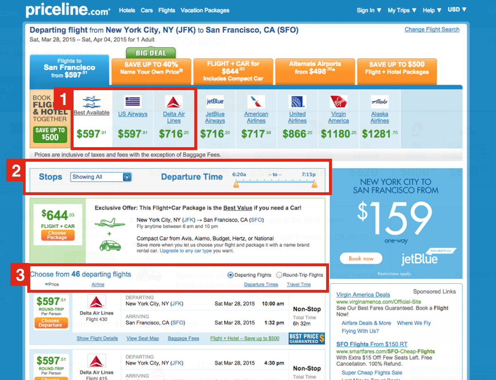

Another early project I was assigned at Priceline.com was the flight's listings re-design, which hadn't been updated in quite some time. When I joined the team, the product was in the process of being re-platformed. To make sure the new Angular app performed just as well as the old version, initial changes to the product were kept purely technical. In these early stages, I helped create templates for the new app in HTML and CSS while planning out the new designs.
The old listings had a lot of problems, some obvious and some not. I wasn't quite sure what features had become the standard in flights searches, so I did a competitive analysis of other airline sites to understand what conventions and features existed.
Now it was time to see what was wrong with our site. Using TryMyUi.com, I ran a baseline usability test on the current product. I was especially interested learning more about how customers interacted with the sorting and filtering options to eliminate irrelevant listings and find their ideal flight. A major drawback of the remote usability tests was the lack of interaction with participants; it might be easy to run a remote test to see if users can accomplish a task or not, but to really understand how customers use the product and how it might be improved, dynamic interaction is needed. Although there weren't resources to schedule in-person user testing at this phase of the project, it's something I was able to do later. The usability test revealed many issues with the design which are addressed in the multi-phased update below.
Because the re-design would include aesthetic and functional enhancements, we decided to use a conservative, multi-phased approach so that we could isolate issues and easily identify which change was contributing to an increase or decrease in conversion or engagement.The first phase was simple and included updating basic visual components of the site (background colors, text weights/sizes, button styles etc.) so that they matched what was defined in our Styleguide.
Phase 2Phase two involved not only widening the page, but also updating the content within the listings to accommodate the increased width. Since the listings portion of the page would eventually decrease in width to make room for a sidebar filters, it was important that my design could accommodate this eventual shift. To gain a better understanding of what content was relevant inside the listings, I worked with customer service to identify major call drivers, reviewed my usability tests and examined listing displays on other competitor's sites. The new listing design also eliminated a lot of redundant content that was speckled throughout the old listings design.
The outcome of the phase 2 design was a success! Overall, page clicks improved by 15%, indicating that customers were interacting more with the page. Conversion across all flight product types also improved. We were able to track which customers were purchasing flights based on the path they took through the listings. Conversion rates for customers entering through the banner ad placed in between listings improved ~150% for one way and round trip flights. Similarly, conversion rates for products accessible through the orange tabs at the top of the page also improved b4 to 9%.
Phase 3The final phase! With the success of phase two, it will be time to improve the functionality and increase the page width to 1200px. Rather than have filtering and sorting options mixed together (and hidden) at the top of the page, phase three shifts filtering functionality to the left side rail and decouples these two complimentary yet distinct behaviors. Filtering criteria will also improve: customers can filter by time of arrival/departure, duration of the flight, price, airline and alternative airports. Input methods for several filters have also been updated to sliders giving customers more flexibility in their filtering options.